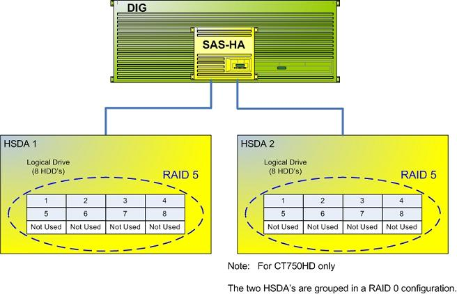
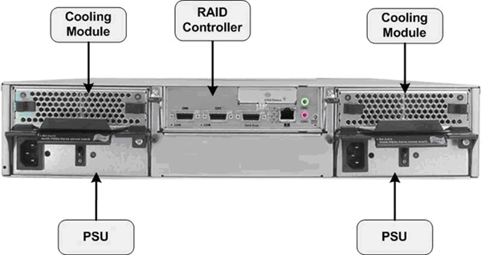
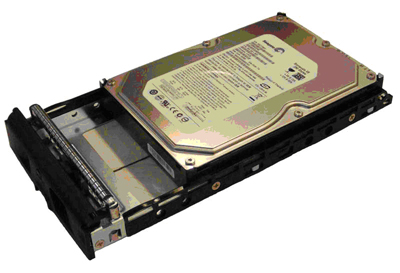
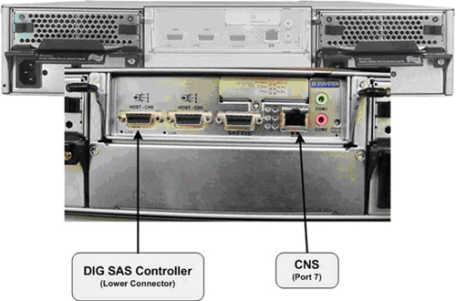
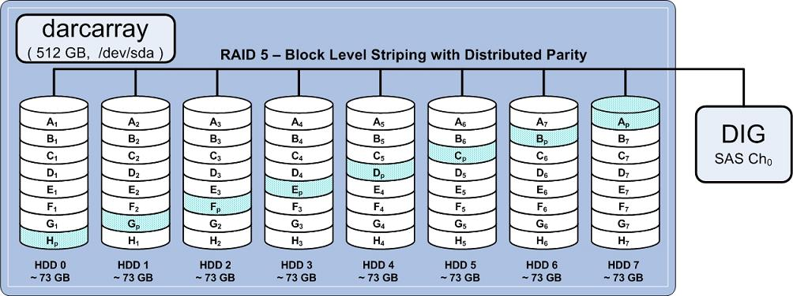

Operating Documentation
Direction 5193574-800, Rev# 22
LightSpeed 7.X Service Methods
Module Version 4.0, Version Date 2/23/12
Operating Documentation |
| Last Revised: | 3 October 2011 |
Illustration 1: High Speed Disk Array

The HSDA is a Commercial Off The Shelf (COTS) RAID (Redundant Array of Independent Discs) disk array configured specially for GE Healthcare by a third party vendor. The primary purpose of the HSDA is to save raw scan data coming from the Data Acquisition Subsystem (DAS) which is transmitted across the Slip Ring to the DIG Computer. The DIG Computer saves the raw scan data to the HSDA for later image generation and reconstruction.
Illustration 2: HSDA Block Diagram

The following is a brief theory overview of the hardware and software associated with the HSDA.
The HSDA resides in the Reconstruction Engine component group of the GOC 6 Series Consoles. The HSDA is a Serial Attached SCSI (SAS) RAID disk array utilizing Serial ATA (SATA II) disk drives. The array is configured in a RAID 5 (striped set of drives with distributed parity) for increased system reliability and speed.
Basic Configuration:
1 - 12 Bay Chassis with RAID Controller Module
8 - SATA II Hard Disk Drives
2 - 120V AC Power Supply Modules
2 - Fan Cooling Modules
| NOTE: | The bottom row of HSDA HDD Trays are empty. No HDDs will be installed in this row. |
Illustration 3: HSDA Component Diagram

The HSDA RAID Controller Module processes I/O requests and RAID parity computations (data protection/redundancy) for the HDDs included in the array. This module also supplies the Serial Attached SCSI (SAS) input interface for the DIG Computer. The RAID configuration is controlled by this module.
| NOTE: | HSDA RAID Controller Firmware:
In order to support the latest SATA Hard Drive FRUs (Seagate – PN#ST3500514NS
– Constellation – 3Gb/s 500GB or Seagate – PN#ST500NM0011 - Constellation
– 6 Gb/s 500GB) an upgrade of the HSDA’s internal RAID Controller
Firmware was required. The new firmware will be installed
in all forward production systems starting 1st Quarter 2011. With
the new firmware installed, the HSDA will support any combination
of old verses new SATA II Hard Drive FRUs. The new Hard Drive will
not work in HSDA’s still running the older (original) firmware.
See HSDA HDD Replacement procedure in the Replacement Chapter of this service manual for details on identifying HSDA RAID Controller Firmware revision. |
The HSDA is equipped with Remote Management functionality via the RAID Controller Module and its dedicated Ethernet network access. By utilizing the RM functionality in the HSDA, an independent path for communication and hardware status checking can be established without the need of a fully functioning HSDA.
The RM functionality of the RAID Controller Module in the HSDA provides the means for virtual presence (remote console) at the Host Computer. This presence includes keyboard, video and mouse redirection. As long as the standby power of the HSDA power supply is present, the RAID Controller Module will operate and allow access from the Host Computer. This RM functionality replaces the Serial over LAN (SOL) functionality used in previous console generations. (See HSDA Troubleshooting.)
The HSDA utilizes eight (8) Serial ATA (SATA) Hard Disk Drives (HDDs) for saving raw scan data in a redundant format (RAID 5). By utilizing a RAID 5 configuration in the HSDA, a single HDD failure will not cause immediate down time. The HSDA will continue working until such time where the failed HDD can be replaced. (See RAID definitions Section 4.3.)
The following lists the HSDA HDD specifications:
• Drive type: Serial ATA
• Interface - SATA, 3.0 Gb/s or 6.0 Gb/s
Drives: (8) Seagate - PN#ST3250310NS - Baracuda - 3 Gb/s 250GB or (8) Seagate - PN#ST3500514NS - Constellation - 3 Gb/s 500GB or (8) Seagate - PN#ST500NM0011 - Constellation - 6 Gb/s 500GB or any combination of the three.
Illustration 4: HSDA SATA Hard Disk Drive

Each HDD will be mounted in a tray assembly which allows for Hot Swapping of the drives in the HSDA assembly.
The HSDA is equipped with two (2) power supply assemblies in a redundant fashion. Both power supplies are required for normal operation, but the HSDA can function with only one working power supply. The power supply assemblies are Hot Swappable and have independent power switches on each of the PSU modules
The HSDA is equipped with two (2) redundant cooling modules for controlling the temperature of the HSDA assembly. Under normal operation each of the cooling modules will run in a low speed mode. Under the following conditions the cooling modules will increase their fan rotational speed.
• Component failure: if one cooling fan in a cooling module, a PSU, or a temperature sensor fails, the remaining cooling fan(s) automatically raises its rotation speed.
• Elevated temperature: if any of the temperature readings breaches the upper threshold set for any of the interior temperature sensors, the cooling fans automatically raise their rotation speed.
• During the subsystem initialization stage, the cooling fans operate at the high speed and return to low speed once the initialization process is completed and no erroneous condition is detected.
See Illustration 6 and 7 for connection destinations of the HSDA in the GOC 6 Series console.
Illustration 5: HSDA 1 Connections

By design each HSDA contains eight Hard Disk Drives (HDDs) of 250 GB or larger capacity (8 X 250 GB = 2 TB). The actual Logical Disk (/dev/sda) created on the HSDA is only 512 GB in size. The Logical Disk Volume of 512 GB is evenly spread across all eight HDDs with an effective scan data capacity of approximately 439 GB (due to RAID 5 utilization).
.
The HSDA's RAID Controller Module is responsible for mapping the available hardware (HDDs), and based on the RAID method configured, creates a disk volume of a specific size spanned across the HDD's. This mapping process is optimized to support specific read/write performance specification critical in handling of the raw scan data.
With RAID 5 utilization and limiting the Logical Disk Volume to 512 GB, each HDD is effectively partitioned to approximately 73 GB. This technique of partitioning the HDDs to be smaller than the actual capacity of the HDD is call “destroking”. Destroking allows for slightly better read/write performance since the logical disk space on the HDD is limited to the faster rotating section of the HDD platter/s.
With RAID 5 utilization, one (1) HDD worth of usable storage evenly spread across all eight (8) HDDs is used for storing the Distributed Parity (Ap - Hp) information. This Distributed Parity information is later used, in the event of a single HDD failure, to supply the necessary data needed to replace missing scan data from the failed HDD. The Distributed Parity information is also used to rebuild the logical disk on a replacement drive, when its installed in the array. The following illustration demonstrates how the HDDs are mapped in the array.
Illustration 6: HSDA RAID 5 Disk Array Diagram

RAID (Redundant Array of Independent Discs) is a concept in storage subsystems that can deliver higher levels of protection against down-time and data loss than conventional disc drives. RAID refers to a drive architecture designed to safeguard critical data through redundancy.
RAID 5 Definition: Block level striping with parity data distributed across all member disks (utilized within HSDA).
Distributed parity requires all but one drive to be present to operate; drive failure requires replacement, but the array is not destroyed by a single drive failure. Upon drive failure, any subsequent reads can be calculated from the distributed parity such that the drive failure is masked from the end user. The array will have data loss in the event of a second drive failure and is vulnerable until the data that was on the failed drive is rebuilt onto a replacement drive.
Provides improved performance and additional storage, but provides no fault tolerance. Any disk failure destroys the array, which becomes more likely with more disks in the array. A single disk failure destroys the entire array because when data is written to a RAID 0 drive, the data is broken into fragments.
The number of fragments is dictated by the number of disks in the drive. The fragments are written to their respective disks simultaneously on the same sector. This allows smaller sections of the entire chunk of data to be read off the drive in parallel, giving this type of arrangement huge bandwidth. When one sector on one of the disks fails, however, the corresponding sector on every other disk is rendered useless because part of the data is now corrupted.
There is more to RAID than redundancy. RAID contributes to automatic load balancing. The right choice of RAID level can speed up data transfers or handle more I/O requests per second.